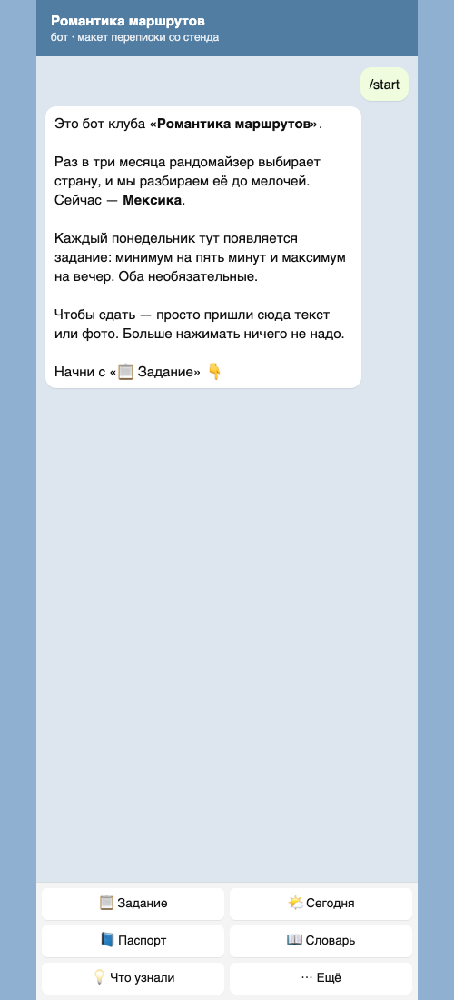
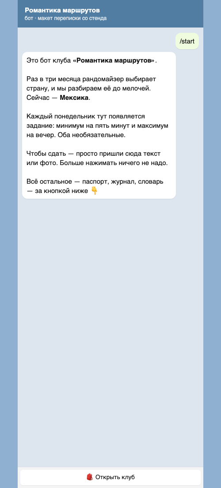
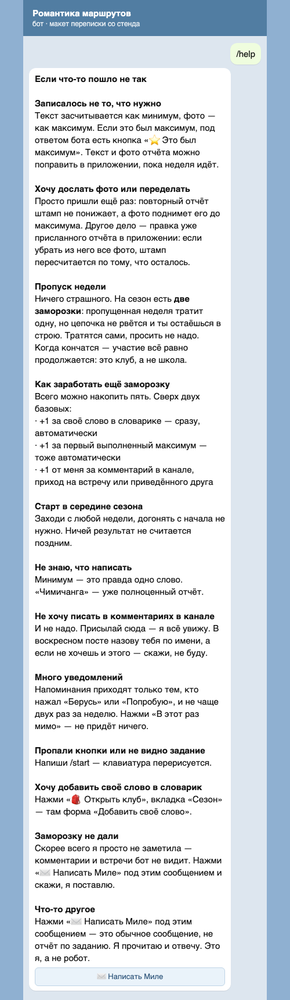
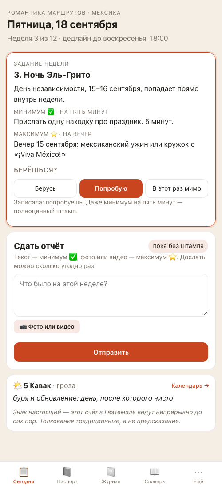
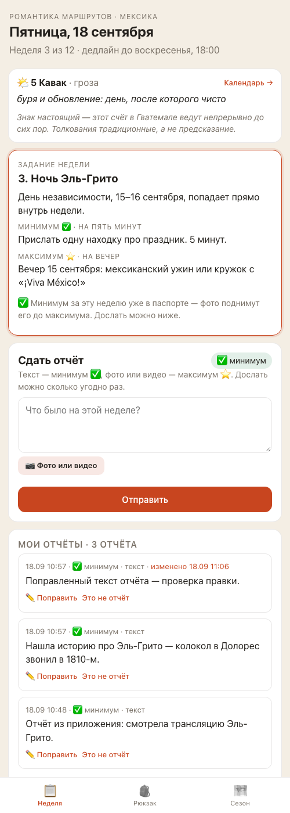
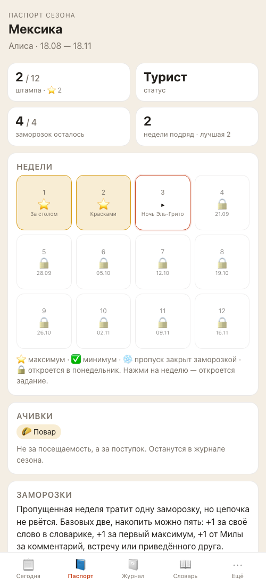
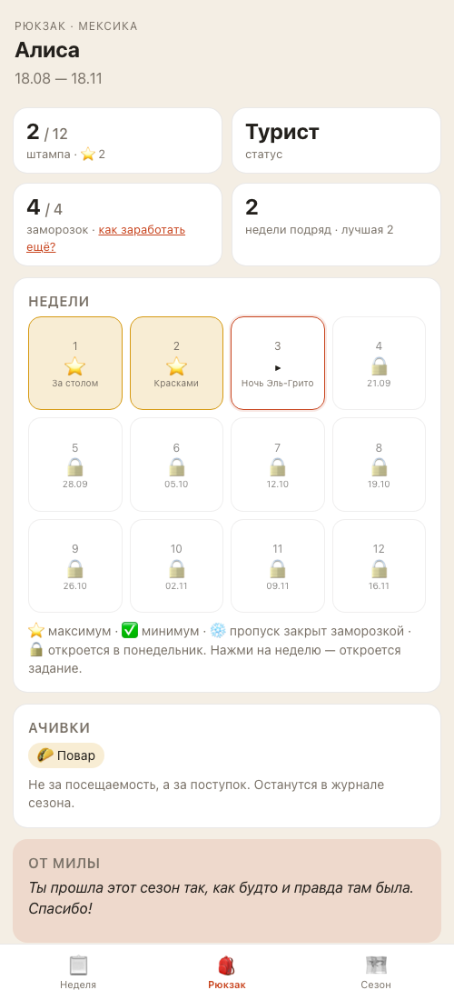
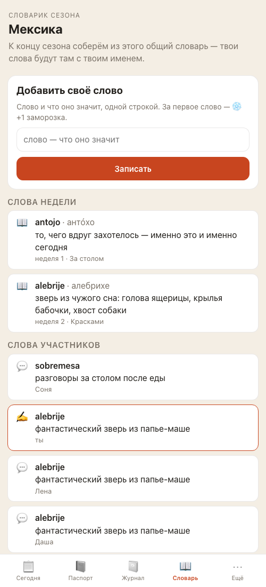
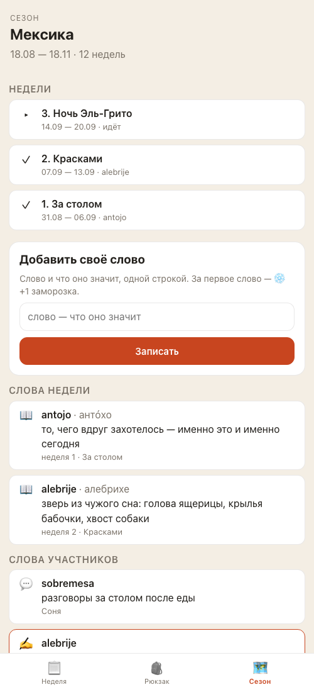

Отчёт на 18 сентября. Что изменилось для людей и для тебя, как это проверено и что осталось. Твоё «выкатываем» уже есть — после живого прогона с тестовым ботом это уедет на прод.
Что увидят люди: было → стало
В чате
было

Шесть кнопок в три ряда, текст зовёт нажать «📋 Задание». Плюс восемь команд в меню «/».
стало

Одна кнопка. Приветствие называет три вкладки, чтобы новичок знал, где паспорт. Снято на стенде — ответ бота настоящий.

Под /help появилась кнопка «✉️ Написать Миле». Она нужна: внутри недели любое обычное сообщение — это отчёт, и письму тебе требовался свой вход. Подсказка про заморозку за комментарий или встречу — здесь же.
Старые кнопки не сломались. Телефон показывает человеку старую клавиатуру, пока он не напишет /start. Поэтому «Задание», «Паспорт», «Ещё», «Помощь» и команды /task, /passport, /journal, /words по-прежнему отвечают — проверено на всех восьми подписях и семи командах. Просто новым людям мы их больше не предлагаем.
В приложении
было · вкладка «Сегодня»

Задание, форма отчёта, цолькин в самом низу. Внизу пять вкладок.
стало · вкладка «Неделя»

День и слово первой строкой (нажатие — календарь), задание, «Берёшься?», форма «Сдать отчёт» и под ней все отчёты этой недели — раньше был виден только последний. Внизу три вкладки.
было · вкладки «Паспорт» и «Журнал»

Паспорт — отдельная вкладка, журнал — ещё одна. Правила заморозок — целым блоком в конце страницы.
стало · вкладка «Рюкзак»

Те же 2 штампа из 12, Турист, 4 заморозки из 4, ачивка «Повар». Правила заморозок свернулись в ссылку «как заработать ещё?» — под ней и форма написать тебе. Журнал с кнопкой «Собрать» — ниже, под паспортом (на скриншот не влез, он длинный).
было · вкладки «Словарь» и «Ещё»

Слова — здесь, факты, помощь, «О клубе» и канал — во вкладке «Ещё».
стало · вкладка «Сезон»

Начавшиеся недели летописью (третья помечена «идёт», будущих нет), форма «Добавить своё слово» осталась — за первое слово по-прежнему +1 заморозка, ниже слова недели, слова участниц, факты, «О клубе», помощь, канал.
Неделя
То, что происходит сейчас. Открывается первой.
Рюкзак
То, что человек накопил: паспорт, ачивки, журнал.
Сезон
То, что от тебя: недели, слова, факты, помощь.
Для тебя
Список команд и кнопку меню бот теперь выставляет сам при каждом запуске. В BotFather ходить не нужно — и не стоит: он всё равно перезапишет.
Твоя памятка по /help описывает три вкладки вместо шести кнопок.
Админка не менялась: те же пять вкладок, сводка, «Привал», напоминание «сейчас» — проверено критиком.
Что проверено и как
493 / 493
автоматических тестов зелёные (до задачи было 480: добавлено 13 новых)
10
прогонов критиков: код ×4, поверхность ×4, данные, границы — на стенде с чистыми демо-данными
72
находки: 2 серьёзные и 14 важных закрыты до прода; 7 важных — старые, записаны карточками и одним вопросом Диме
Первая ступень (на ветке задачи). Критик кода нашёл настоящую ошибку: после отправки отчёта из приложения экран показывал «Не отправилось», хотя отчёт уже записался, а повторное нажатие создавало второй такой же. Причина — переименованная функция, четыре вызова остались старыми. Починено, добавлен список отчётов недели, помощь в приложении, русские тексты вместо старых названий кнопок. Критик поверхности прошёл все восемь пунктов приёмки на стенде и нашёл английский текст ошибки при слишком длинном слове — теперь по-русски.
Вторая ступень (релиз). Четыре критика одновременно на чистом стенде:
Критик
Что делал
Нашёл
Итог
Верификатор
Все автоматические проверки
ruff, mypy, 493 теста — чисто
зелёное
Кода
Читал каждую строку изменений
3 важных: паспорт в «Рюкзаке» не обновлялся после «Это не отчёт»; ошибки формы не попадали в журнал сервера; откат не описан. Все закрыты, повторный круг чистый
проходит
Поверхности
Играл участницу и тебя: /start → задание → отчёт текстом → с фото → правка → паспорт → словарь → журнал → PDF → админка → напоминание; приёмка задачи; тёмная тема
1 критическая: если человек добавлял слово, которое у него уже есть, бот молчал, а следующее сообщение — настоящий отчёт — публиковалось в общем словаре с его именем, и убрать его было нечем. Старая ошибка, но на той же поверхности. Закрыта: бот отвечает «слово уже есть», отчёт остаётся отчётом
проходит после правки
Данных
Считал SQL-ом: отчёты, штампы, заморозки, письма, бэкап
В этом релизе — ничего: миграций нет, повтор отправки не создаёт второй отчёт (5 одновременных → один), максимум не понижается, отмена — без удаления. Две старые находки — карточками
проходит
Границ
11 файлов, 51 МБ, 4001 знак, 20 одновременных нажатий, 206 отчётов за неделю, обрыв связи, мусор в запросах
Границы держатся. Обрыв загрузки писался в журнал как ошибка сервера — теперь одной строкой
проходит
Строки журналов после прогонов: menu_applied при старте бота, refused вместо трейсбека на дубле слова, upload_client_disconnected вместо «Exception in ASGI application»; Traceback и ERROR по сценариям задачи — ноль.
Что осталось и чего не трогали
Не проверено на стенде — только в настоящем Telegram: кнопка-дверь как настоящее окно приложения (Telegram даёт это только по https, на стенде она отвечает ссылкой) и меню «/» из двух команд. Это живой прогон с тестовым ботом перед выкаткой.
Люди увидят одну кнопку не сразу. Понедельничная рассылка и напоминания клавиатуру не перерисовывают — она обновится у каждого после его /start. Нужен пост в канал: «нажмите /start в боте».
Записано карточками, ждёт твоего слова (всё старое, не из этой задачи): слово участницы до 4000 знаков раздувает общий словарик всем; два одновременных «своих слова» дают дубль; проверка бэкапа не сверяет письма — это зона бэкапов, спрошу тебя отдельно перед правкой; звёздочка по кнопке «⭐ Это был максимум» теряется, если отменить другой отчёт той же недели; в твоей карточке человека «text/photo» вместо «текст/фото».
Открытый вопрос к Диме: набранное руками одно слово «Паспорт» бот считает кнопкой, а не отчётом. Приёмочный тест Димы закрепляет это поведение, поэтому я его не меняла — записала в правила и в журнал.
Не трогали: приём отчётов в чате, штампы, заморозки, уровни, напоминания, админку. Личные слова и факты, архив, поздние отчёты — отдельные задачи.
Что дальше
Живой прогон с тестовым ботом, потом выкатка (окно спрошу отдельно: сколько людей в боте сейчас). После выкатки — в настоящем боте с телефона:
Напиши /start — внизу одна кнопка «🎒 Открыть клуб», в меню «/» две команды.
Нажми кнопку — откроется «Неделя»: день, задание, «Берёшься?», форма отчёта.
«Рюкзак»: паспорт, «как заработать ещё?», журнал с «Собрать».
«Сезон»: недели, «Добавить своё слово», факты, «Если что-то пошло не так».
/help → «✉️ Написать Миле» → любое сообщение — придёт тебе в «Письма».
Если что-то не так — скажи словами, что увидела. Через день посмотрю прод и закрою карточку.